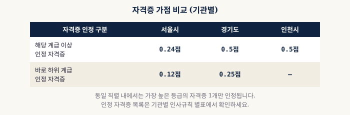
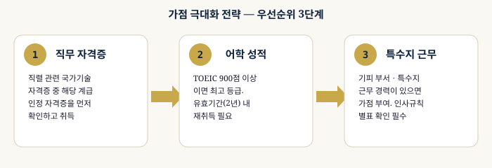

공무원 승진 가점 종류와 획득 전략
— 자격증·어학 가점 총정리
1 가점이란? 최대 5점의 기회
가점은 평정점수에서 최대 5점을 추가로 얻을 수 있는 항목입니다. 근무성적평정(70점)·경력평정(30점)과 달리 노력으로 직접 높일 수 있는 유일한 영역이기 때문에, 승진을 앞둔 공무원이라면 반드시 챙겨야 합니다.
가점의 종류는 기관마다 다르지만, 대부분 자격증·어학·특수지 근무·실적의 4가지 항목으로 구성됩니다. 근무성적평정은 평정권자의 주관적 판단과 부서 배치 운이 크게 작용하고, 경력평정은 시간이 지나야만 쌓이는 항목이지만, 가점은 본인의 준비와 실행만으로 확보할 수 있다는 점에서 성격이 다릅니다.
특히 근평 경쟁이 치열한 7급 이상 구간에서는 동료들과 근평 등급 차이가 크지 않은 경우가 많습니다. 이런 상황에서 가점 0.1~0.5점의 미세한 차이가 명부 순위를 뒤집는 결정적 변수가 되기도 합니다. 반대로 가점을 전혀 챙기지 않으면, 근평이 비슷한 경쟁자에게 계속 밀리는 상황이 반복될 수 있습니다.
2 자격증 가점 (서울시 기준)
직무와 관련된 자격증을 보유하면 가점을 받을 수 있습니다. 자격증의 수준(해당 계급 인정 vs 하위 계급 인정)에 따라 점수가 다릅니다.
| 구분 | 서울시 | 경기도 | 인천시 |
|---|---|---|---|
| 해당 계급 이상 인정 자격증 | 0.24점 | 0.5점 | 0.5점 |
| 바로 하위 계급 인정 자격증 | 0.12점 | 0.25점 | — |

3 어학 가점
공인 외국어 성적 보유자에게 부여되는 가점입니다. 서울시 기준 최대 0.12점이며, 성적 구간별로 점수가 다릅니다.
| 구분 | TOEIC | 가점 |
|---|---|---|
| 1급 | 900점 이상 | 0.12점 |
| 2급 | 800점 이상 ~ 900점 미만 | 0.05점 |
4 가점 극대화 전략
승진을 앞두고 있다면 아래 순서로 가점 항목을 점검해보세요.
이 세 가지를 우선순위대로 준비하는 이유는 준비 기간과 반영 시점이 다르기 때문입니다. 자격증은 시험 일정과 발급까지 수개월이 걸리는 경우가 많아 가장 먼저 시작해야 합니다. 어학 성적은 상대적으로 단기간에 취득 가능하지만 유효기간이 있어 승진 시점에 맞춰 갱신 계획을 세워야 합니다. 특수지 근무는 인사이동 시점과 맞물려야 하므로 인사담당자와 미리 상담해두는 것이 좋습니다.
가점 항목을 준비할 때 가장 흔한 실수는 기준일을 넘겨서 취득하는 것입니다. 자격증 발급일이나 어학 성적 취득일이 평정 기준일(통상 6월 30일, 12월 31일) 이후라면 해당 반기에는 반영되지 않고 다음 반기로 넘어갑니다. 승진을 앞두고 있다면 최소 기준일 1~2개월 전에는 모든 서류 접수와 발급을 완료해두는 것이 안전합니다.

자격증·어학 가점을 반영한 내 최종 평정점수가 얼마인지 계산해보세요.
🏆 가점 포함 평정점수 계산하기